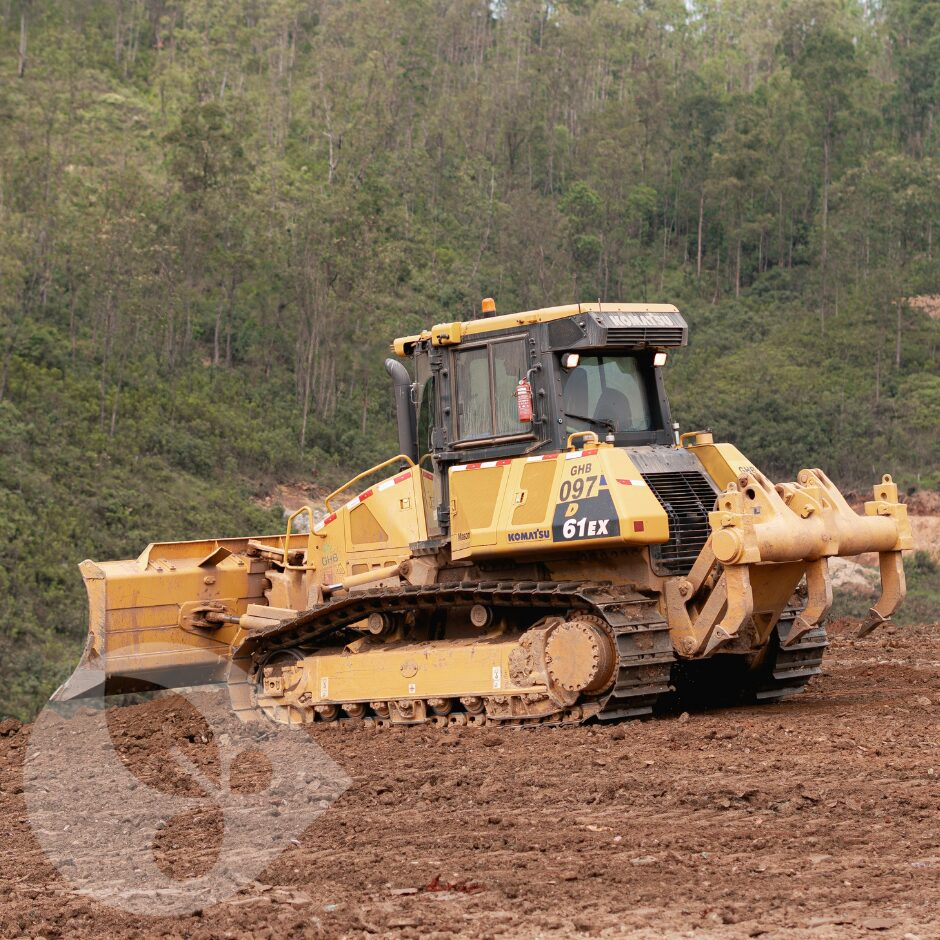

Supressão vegetal mecanizada e semimecanizada
Limpeza de vegetação de grande porte com Feller Bunchers e escavadeiras multifuncionais, com manejo de fauna e flora.
Solicitar orçamento deste serviço
Descrição técnica & aplicações
Onde e como aplicamos
Supressão vegetal autorizada para implantação de empreendimentos, executada com equipamentos florestais de alta produtividade e acompanhamento técnico de fauna e flora, em conformidade com a ASV.
- Implantação de linhas de transmissão e dutos
- Abertura de cavas e expansões minerárias
- Faixas de domínio rodoviárias e ferroviárias
- Canteiros de obras de infraestrutura
Supressão mecanizada
Feller Bunchers, harvesters e escavadeiras multifuncionais.
Supressão semimecanizada
Equipes com motosserras em áreas sensíveis ou de difícil acesso.
Manejo de fauna e flora
Afugentamento, resgate e salvamento de germoplasma.
Soluções e técnicas utilizadas
| Solução técnica | Foco de aplicação | Diferencial GHB |
|---|---|---|
| Mecanizada | Grandes áreas e prazos curtos | Alta produtividade e segurança |
| Semimecanizada | Áreas sensíveis / declivosas | Precisão e baixo impacto |
| Romaneio e cubagem | Material lenhoso | Rastreabilidade para o órgão ambiental |
Benefícios técnicos
✓
Cumprimento rigoroso da ASV
✓
Redução de prazos de liberação de frentes
✓
Segurança operacional SSMA
✓
Rastreabilidade do material lenhoso
Obras relacionadas
Ver todasCases com supressão vegetal mecanizada e semimecanizada
Vamos dimensionar a solução para o seu edital?
Envie o termo de referência e receba uma proposta técnica qualificada.
Solicitar proposta técnica